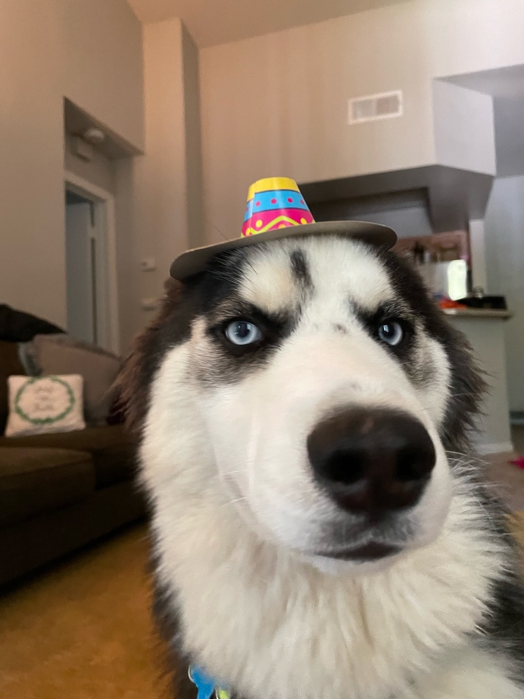

About Me
I am a passionate and driven individual with a diverse set of interests and skills. From cooking and woodworking to expanding my knowledge of different cultures, I am always eager to learn and grow. I take pride in making the best of any situation and helping others in any way I can. Whether it's providing top-notch customer service or volunteering in my community, I am committed to making a positive impact wherever I go. One of my biggest passions is the craft beer and cider scene, and I am proud to be part of the home brewing community. As an Eagle Scout, I value the importance of teamwork, leadership, and dedication, and I strive to bring these qualities to everything I do. I am also currently taking a coding boot camp with Rice University, where I am expanding my skill set and exploring new career opportunities. Above all, I am a family-oriented individual who cherishes the time I spend with my loved ones and my dog, Charlie the Husky  With over 8 years of customer service experience, I am confident in my ability to work effectively with people from all walks of life and provide exceptional service to customers and colleagues alike.